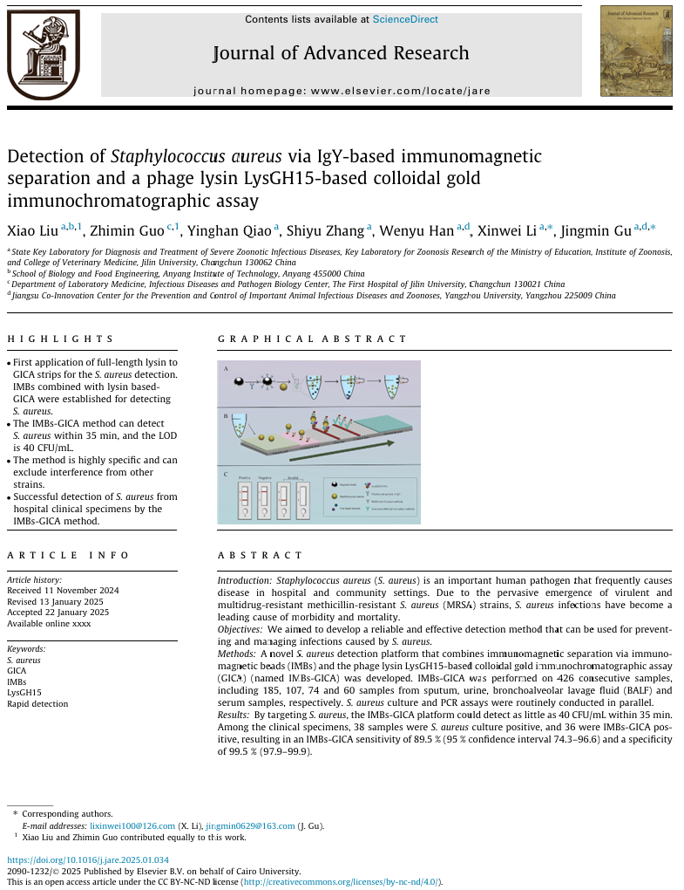

Biological characterization of the phage lysin AVPL and its efficiency against Aerococcus viridans-induced mastitis in a murine model. Appl Environ Microbiol. 2024
A novel phage putative depolymerase, Depo16, has specific activity against K1 capsular-type Klebsiella pneumoniae. Appl Environ Microbiol . 2024
The pig intestinal phageome is an important reservoir and transfer vector for virulence genes. Science of The Total Environment. 2024
Potential of phage EF-N13 as an alternative treatment strategy for mastitis infections caused by multidrug-resistant Enterococcus faecalis. Journal of Dairy Science. 2023
Aerococcus viridans Phage Lysin AVPL Had Lytic Activity against Streptococcus suis in a Mouse Bacteremia Model. Int. J. Mol. Sci. 2023.
Structural biology and functional features of phage-derived depolymerase Depo32 on Klebsiella pneumoniae with K2 serotype capsular polysaccharides. Microbiol Spectr. 2023
Metagenomics analysis reveals potential pathways and drivers of piglet gut phage-mediated transfer of ARGs. Sci Total Environ. 2023
A phage cocktail combined with the enteric probiotic Lactobacillus reuteri ameliorated mouse colitis caused by S.typhimurium. Food Funct. 2022
The Combination of Phages and Faecal Microbiota Transplantation Can Effectively Treat Mouse Colitis Caused by Salmonella enterica Serovar Typhimurium. Front Microbiol. 2022
A novel lysin Ply1228 provides efficient protection against Streptococcus suis type 2 infection in a murine bacteremia model. Vet Microbiol. 2022
Rapid and sensitive detection of Staphylococcus aureus using biolayer interferometry technology combined with phage lysin LysGH15. Biosens Bioelectron. 2022
Combination Therapy of Phage vB_KpnM_P-KP2 and Gentamicin Combats Acute Pneumonia Caused by K47 Serotype Klebsiella pneumoniae. Front. Microbiol. 2021
The Phage Holin HolGH15 Exhibits Potential As an Antibacterial Agent to Control Listeria monocytogenes. Foodborne Pathog Dis. 2021
Therapeutic Efficacy of Phage PIZ SAE-01E2 Against Abortion Caused by Salmonella abortus equi in Mice. Appl Environ Microbiol. 2020
Bacteriophage Protects Against Aerococcus viridans Infection in a Murine Mastitis Model. Front Vet Sci. 2020
The Yersinia Phage X1 Administered Orally Efficiently Protects a Murine Chronic Enteritis Model Against Yersinia enterocolitica Infection. Front. Microbiol. 2020
Three Capsular PolysaccharideSynthesis-RelatedGlucosyltransferases,GT-1, GT-2and WcaJ, Are Associated WithVirulence and Phage Sensitivityof Klebsiella pneumoniae.Front. Microbiol. 2019
The characteristics and genome analysis of vB_AviM_AVP, the first phage infecting Aerococcus viridans.Viruses. 2019
Preventive effect of the phage VB-SavM-JYL01 on rabbit necrotizing pneumonia caused by Staphylococcus aureus.Vet Microbiol. 2019
A smooth-type, phage-resistant Klebsiella pneumoniae mutant strain reveals OmpC is indispensable for GH-K3 infection.Appl Environ Microbiol. 2018
Structural and biochemical characterization reveals LysGH15 as an unprecedented "EF-hand-like" calcium-binding phage lysin.PLoS Pathog. 2014